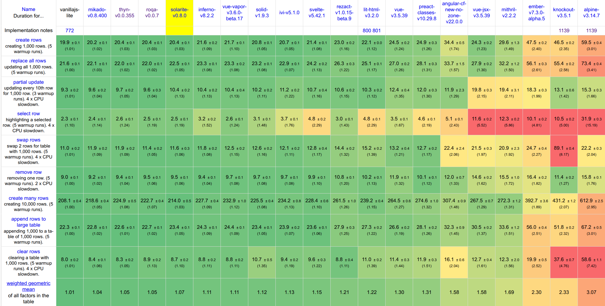

Solarite makes native web components fast to update, with no build step and no signals. You write plain JavaScript and call render() when your data changes; Solarite then patches only the DOM that changed. It's tiny (12.6KB with Brotli) and runs straight in the browser as a standard ES module.
import h, {Solarite} from './dist/Solarite.min.js';
class ShoppingList extends Solarite { // Solarite extends HTMLElement
constructor(items=[]) {
super();
this.items = items;
}
addItem() {
this.items.push({name:'', qty:0});
this.render();
}
removeItem(it) {
this.items.splice(this.items.indexOf(it),1);
this.render();
}
render() {
// Think of h(this) as like:
// this.outerHTML = `<shopping-list>...`
// but rendering only minimal DOM updates when the html changes.
h(this)`
<shopping-list oninput=${this.render}>
<style>/* scoped styles */
:host input { width: 80px }
</style>
<button onclick=${this.addItem}>Add Item</button>
${this.items.map(item => h`
<div> <!-- 2-way binding -->
<input placeholder="Item" value=${[item,'name']}>
<input type="number" value=${[item,'qty']}>
<button onclick=${[this.removeItem, item]}>x</button>
</div>`
)}
<pre>items = ${JSON.stringify(this.items,null,4)}</pre>
</shopping-list>`
}
}
// If not yet called, render() is called automatically when added to DOM
document.body.append(new ShoppingList([{name: 'Solarite', qty: 1}])); Key Features
- No build step: Solarite is a standard ES module that the browser loads directly.
- You decide when to render: Nothing updates until you call
render(). - Minimal updates: A render only touches the DOM elements that changed.
- Plain state: There are no signals and no state setup. Keep your data in regular JavaScript variables, objects, and arrays, nested as deep as you like.
- Two-way binding: A shorthand connects a form element to a property.
- Keyed lists: An optional
keyattribute makes DOM nodes follow their data when a list reorders. - Scoped CSS: A component's styles apply only to that component, while styles from the page still reach it. No Shadow DOM is involved.
- Element references: An element with an
idordata-idbecomes a property on the class. - Child components: A nested component receives its attributes as constructor arguments.
- TypeScript: A
.d.tsfile is included, so editors can autocomplete and type-check the API. - MIT license: Free for commercial use, with no attribution required.
Installation
Quick Start
Import the module directly from a CDN:
Or install via NPM:
npm install solariteDevelopment Tips
An editor like WebStorm or VS Code with a Lit-html extension will syntax highlight the HTML inside template strings. The included Solarite.d.ts gives you auto-completion and type checking for the API.
Performance
Solarite is faster than almost every well-known framework in the official js-framework-benchmark results. Its score of 1.07 is close to the 1.01 of hand-written vanilla JavaScript. Lower is better: a score of 1.00 would mean being the fastest entry in every test. The table shows selected entries from the results of Aug 12, 2026.

Core Concepts
Web Components
A Solarite component is a regular web component. What Solarite adds is a way to re-render it that updates only the elements whose data changed.
In this small example we create a class called MyComponent that extends Solarite, which itself extends HTMLElement, the standard base class for web components. Its render() method defines its HTML content.
Browsers require a web component's tag name to contain at least one dash: my-component, not mycomponent.
import h, {Solarite} from './dist/Solarite.min.js';
class MyComponent extends Solarite {
name = 'Fred';
render() {
// This is how we'd create a web component using vanilla JavaScript
// without Solarite. But this recreates all children on every render!
//this.innerHTML = `Hello <b>${this.name}!</b>`;
// Using Solarite's h() function performs minimal updates on render.
h(this)`<my-component>Hello <b>${this.name}!</b></my-component>`
}
}
// Register the <my-component> tag name with the browser.
MyComponent.define('my-component'); // Optional.
let mc = new MyComponent();
document.body.append(mc);
mc.name = 'Solarite';
mc.render();
We can alternatively instantiate the element directly from html:
<my-component></my-component>Note that we call .define() to register the <my-component> tag name with the browser. Internally, this calls the browser's customElements.define() function. Browsers can only use web components that have been defined.
If you don't call .define() and instead create an instance via new, the tag is defined automatically using the class name converted to kebab-case. But this auto-define can't happen if the browser first meets the element as a tag name in html, so in that case you must call .define() yourself.
Since these are just regular web components, they can define the connectedCallback() and disconnectedCallback() methods that will be called when they're added and removed from the DOM, respectively.
Rendering
How Rendering Works
Use the h function as a tagged template literal to convert HTML strings and embedded expressions into a Solarite Template. A Template holds the parsed HTML together with the values of its expressions.
When you call h(this) followed by a template string, it renders that Template as the element's attributes and children. This is like assigning to the browser's built-in this.outerHTML property, except that Solarite replaces only the elements that changed instead of every node, which is much faster.
When an element is first added to the DOM, render() is called automatically, unless you have already called it yourself.
Manual Rendering
Unlike many frameworks, Solarite does not automatically re-render when data changes. You call render() when you want the DOM updated. That means you can change as much data as you like without triggering a render, and nothing redraws at a moment you didn't choose.
Wrapping the web component's html in its tag name is optional. But without it you then must set any attributes on your web component manually:
import h, {Solarite} from './dist/Solarite.min.js';
class MyComponent extends Solarite {
name = 'Solarite';
render() {
// With optional element tags:
// h(this)`<my-component class="big">Hello <b>${this.name}!</b></my-component>`
// Without optional element tags:
h(this)`Hello <b>${this.name}!</b>`;
this.setAttribute('class', 'big');
}
}
MyComponent.define('my-component');
let myComponent = new MyComponent();
document.body.append(myComponent);If you do wrap the web component's html in its tag, that tag name must exactly match the tag name passed to customElements.define().
SVG
Use the svg tagged-template prefix for SVG markup. The resulting template can be embedded in a normal h template. Use svg for dynamically generated SVG child fragments too, such as shapes created in a loop.
import h, {Solarite, svg} from './dist/Solarite.min.js';
class BarChart extends Solarite {
values = [8, 14, 6, 18, 10];
render() {
let max = Math.max(...this.values);
h(this)`
<bar-chart>
${svg`
<svg viewBox="0 0 ${this.values.length * 14} 40" width="12em" height="4em" fill="currentColor">
${this.values.map((value, i) => svg`
<rect x=${i * 14} y=${40 - value / max * 40} width="10" height=${value / max * 40} rx="2">
<title>${value}</title>
</rect>`
)}
</svg>`}
</bar-chart>`
}
}
document.body.append(new BarChart());By default, expressions render as text, so raw SVG markup in a string expression is escaped and shown as text. Put it in an svg tagged template instead. That also makes a reusable icon: assign the whole template to a constant once and embed it wherever you need it.
import h, {toEl, svg} from './dist/Solarite.min.js';
const playIcon = svg`<svg viewBox="0 0 24 24" width="24" height="24" fill="currentColor" aria-hidden="true">
<path d="M8 5v14l11-7L8 5z"></path>
</svg>`;
let button = toEl({
render() {
h(this)`<button>${playIcon} Play</button>`
}
});
document.body.append(button);These types of values can be used in expressions within h tagged template literals:
- strings and numbers.
- boolean true, which will be rendered as 'true'
- false, null, and undefined, which will be rendered as empty string.
- Solarite Templates, which can be created by
h-tagged template literals. - DOM Nodes, including other web components.
- Arrays of any of the above.
- Functions that return any of the above.
Attributes
Dynamic attributes can be specified by inserting expressions inside a tag. An expression can be part or all of an attribute value, or a string specifying multiple whole attributes. For example:
import h, {toEl} from './dist/Solarite.min.js';
let style = 'width: 100px; height: 40px; background: orange';
let isEditable = true;
let height = 40;
let attributeDemo = toEl({
render() {
h(this)`
<div class="big">
<div style=${style}>Look at me</div>
<div style="${'width: 100px'}; height: ${height}px; background: gray">Look at me</div>
<div style="width: 100px; height: 40px; background: brown" ${'title="I have a title"'}>Hover me</div>
<div style="width: 100px; height: 40px; background: red" contenteditable=${isEditable} >Edit me</div>
</div>`
}
});
document.body.append(attributeDemo);
style = 'width: 100px; height: 40px; background: green';
setTimeout(attributeDemo.render, 2000);Expressions can also toggle the presence of an attribute. In the last div above, if isEditable is false, null, undefined, or an empty string, the contenteditable attribute is removed rather than left behind as contenteditable="". Zero and the string "0" are ordinary values and are written normally.
Form elements are the exception, since there an empty string is a real value. value=${''} on an <input> clears the field rather than removing anything, and the same goes for any attribute the element exposes as a property, such as checked.
You can also specify multiple attributes at once using an object, where the keys are attribute names and the values are attribute values:
import h, {Solarite} from './dist/Solarite.min.js';
class ObjectAttributeDemo extends Solarite {
constructor() {
super();
this.attrs = {
class: 'important',
style: 'color: blue',
'data-test': 'example',
disabled: false
};
}
setDisabled() {
this.attrs.disabled = true;
this.render();
}
render() {
h(this)`
<object-attribute-demo>
<button ${this.attrs} onclick=${this.setDisabled}>
Click to disable
</button>
</object-attribute-demo>`
}
}
ObjectAttributeDemo.define('object-attribute-demo');
document.body.append(new ObjectAttributeDemo());In the example above, all attributes from the this.attrs object are applied to the button element. If a value is undefined, false, or null, the attribute will be skipped or removed if it was previously set.
Note that attributes can also be assigned to the root element, such as class="big" on the <object-attribute-demo> tag above.
Id's
Any element in the html with an id or data-id attribute is automatically bound to a property with the same name on the class instance. But this only happens after render() is first called:
import h, {Solarite} from './dist/Solarite.min.js';
class RaceTeam extends Solarite {
render() {
h(this)`
<race-team>
<input data-id="driver" value="Mario">
<div data-id="car">Cutlas Supreme</div>
<div data-id="instructor.name">Lightning McQueen</div>
</race-team>`
}
}
let raceTeam = new RaceTeam();
document.body.append(raceTeam); // calls render();
raceTeam.driver.value = 'Luigi';
raceTeam.car.style.border = '1px solid green';
// We don't need to call render() because we're editing the DOM Directly.Don't use an id that collides with a built-in HTMLElement property (like title or style), a class method, or a field that already holds a non-element value. Solarite throws rather than silently clobbering it, but only when you run from the source files or from Solarite-debug.js; the check is a development aid and is compiled out of Solarite.js and Solarite.min.js, so render every template at least once during development to be sure you have seen it.
Events
To capture events, set an event attribute like onclick to a function. Alternatively, use an array where the first item is the function and subsequent items are its arguments.
import h, {Solarite} from './dist/Solarite.min.js';
class EventDemo extends Solarite {
showMessage(message) {
alert(message);
}
render() {
h(this)`
<event-demo>
<button onclick=${(ev, el)=>alert('Element ' + el.tagName + ' clicked!')}>
Click me</button>
<button onclick=${[this.showMessage, 'I too was clicked!']}>
Click me too!</button>
</event-demo>`
}
}
document.body.append(new EventDemo());Event binding with an array containing a function and its arguments is slightly faster, since the function isn't recreated when render() is called, and it doesn't need to be unbound and rebound. But the performance difference is usually negligible.
Make sure to put your events inside ${...} expressions, because classic events can't reference variables in the current scope.
Event Delegation
When a template gives an element a handler, like <button onclick=${...}>, you might expect Solarite to call addEventListener on that button. It doesn't, and the reason is cost. The browser keeps a small record for every listener, and creating each one takes about a microsecond. That is nothing for one button, but a table of ten thousand rows with two handlers each would spend more time registering listeners than building the rows. So Solarite stores the handler on the element as a property and registers nothing. This is called event delegation, and it is on by default.
Something still has to run those handlers when an event happens. Solarite listens once per event type on your component's root element and on the document, during the capture phase, which runs before the event reaches anything. When an event starts, that listener looks at the elements on the event's path, finds the ones holding a handler, and attaches a real listener to each of them for this one event. The browser then dispatches the event exactly as it normally would, so your handlers run at their element's turn, in the right order with any listeners other code added, and the temporary listeners are removed afterward. Rendering stays cheap, and events behave like native ones: stopPropagation() works in both directions, event.currentTarget is the element, events dispatched programmatically reach the handler even when they don't bubble, and a handler keeps working when another component moves its element elsewhere in the page. Your templates don't change:
import h, {Solarite} from './dist/Solarite.min.js';
class LogViewer extends Solarite {
rows = [
{id: 1, text: 'First message'},
{id: 2, text: 'Second message'},
{id: 3, text: 'Third message'},
];
deleteRow(row) {
this.rows = this.rows.filter(r => r !== row);
this.render();
}
render() {
h(this)`
<log-viewer>
${this.rows.map(row => h`
<div key=${row.id}>
${row.text}
<button onclick=${[this.deleteRow, row]}>x</button>
</div>`)}
</log-viewer>`
}
}
document.body.append(new LogViewer());Only events that bubble are delegated (click, input, keydown, and the like); focus, blur, scroll and other non-bubbling events keep regular listeners. Pass eventDelegation: ['click', 'input'] as a render option to delegate only specific events, or eventDelegation: false to register every handler with addEventListener while the template renders.
There is one visible difference from a regular listener, and it only matters when your own code also adds a listener to the same element as a template handler. A delegated handler is attached when the event starts, so it runs after any listener already on that element. A listener registered while the template rendered would usually have run first.
When that order matters, prefix the attribute with native:, as in <button native:onclick=${...}>. Solarite then registers just that handler with addEventListener while the template renders, so it takes its normal place among the element's listeners, and the rest of the component stays delegated. Everything else is the same: the (event, element) arguments, this, and the [fn, ...args] array form. In JSX write it the same way, <button native:onclick={...}>.
// A library adds its own keydown listener to this textarea after render.
// With native:, the template's handler was registered first, so it runs first.
h(this)`
<text-editor>
<textarea native:onkeydown=${e => this.handleTab(e)}></textarea>
</text-editor>`Two-Way Binding
Two-way binding ties a form element to a property of your component. Rendering writes the property into the element, and the user's input is written back to the property.
Basic Two-Way Binding
Form elements update properties when an event like oninput is assigned a function to handle the change:
import h, {Solarite} from './dist/Solarite.min.js';
class BindingDemo extends Solarite {
constructor() {
super();
this.count = 0;
this.lines = [];
}
render() {
h(this)`
<binding-demo>
<input type="number" value=${this.count}
oninput=${ev => {
this.count = ev.target.value;
this.render();
}}>
<pre>count is ${this.count}</pre>
<textarea rows="6" value=${this.lines.join('\n')}
oninput=${ev => {
this.lines = ev.target.value.split('\n')
this.render();
}}
></textarea>
<pre>line count is ${this.lines.length}</pre>
<button onclick=${()=> {
this.count = 0;
this.lines = [];
this.render();
}}>Reset</button>
</binding-demo>`
}
}
document.body.append(new BindingDemo());<input>, <select>, <textarea>, and elements with the contenteditable attribute can all use the value attribute to set their value on render. Likewise so can any custom web component that defines a value property.
Shorthand Two-Way Binding
Solarite also provides a shortcut for two-way binding using array syntax: value=${[this, 'count']}:
- When
render()is called, the input's value is set tothis.count - When a user types in the input, an input event listener updates
this.countwith the new value.
Optionally add an oninput=${this.render} attribute to trigger re-rendering when the value changes.
import h, {Solarite} from './dist/Solarite.min.js';
class BindingDemo extends Solarite {
constructor() {
super();
this.reset();
}
reset() {
this.count = 0;
this.isBig = false;
this.render();
}
render() {
h(this)`
<binding-demo>
<style> :host { font-size: ${this.isBig ? 20 : 12}px }</style>
<input type="number" value=${[this, 'count']}
oninput=${this.render}><br>
<label>
<input type="checkbox" checked=${[this, 'isBig']}
oninput=${this.render}> Big Text
</label>
<pre>count is ${this.count}</pre>
<button onclick=${this.reset}>Reset</button>
</binding-demo>`
}
}
document.body.append(new BindingDemo());Form Element Types
When a bound value is read back from an element, Solarite converts it to the most appropriate JavaScript type. Bind to the value attribute for most elements, and to the checked attribute for checkboxes and radio buttons.
| Element | Bind to | Property type read back |
|---|---|---|
<input> (text, password, email, etc.) |
value |
String |
<input type="checkbox"> |
checked |
Boolean |
<input type="radio"> |
checked |
String (the selected radio's value) |
<input type="number">, type="range" |
value |
Number (NaN when empty) |
<input type="date">, time, datetime-local |
value |
Date object (null when empty) |
<input type="file"> |
value |
Array of File objects |
<select> |
value |
String |
<select multiple> |
value |
Array of Strings |
<textarea> |
value |
String |
contenteditable element |
value |
String (the element's innerHTML) |
Custom component with a value property |
value |
Whatever type the component's value holds |
For a radio group, put the same checked=${[this, 'prop']} binding on every radio in the group. Each radio is checked when its value matches the bound property. Clicking a radio writes its value back to the property:
import h, {Solarite} from './dist/Solarite.min.js';
class ColorPicker extends Solarite {
color = 'green';
render() {
h(this)`
<color-picker>
<label><input type="radio" name="color" value="red"
checked=${[this, 'color']} oninput=${this.render}> Red</label>
<label><input type="radio" name="color" value="green"
checked=${[this, 'color']} oninput=${this.render}> Green</label>
<label><input type="radio" name="color" value="blue"
checked=${[this, 'color']} oninput=${this.render}> Blue</label>
<pre>color is ${this.color}</pre>
</color-picker>`
}
}
document.body.append(new ColorPicker());For a <select multiple>, bind an array. Each option whose value is in the array is selected, and the selected options' values are written back as an array of strings:
import h, {Solarite} from './dist/Solarite.min.js';
class Toppings extends Solarite {
picked = ['cheese'];
render() {
h(this)`
<toppings-list>
<select multiple value=${[this, 'picked']} oninput=${this.render}>
<option value="cheese">Cheese</option>
<option value="olives">Olives</option>
<option value="onions">Onions</option>
</select>
<pre>picked is ${JSON.stringify(this.picked)}</pre>
</toppings-list>`
}
}
document.body.append(new Toppings());Loops
The most common way to render lists is with JavaScript's Array.map() function:
import h, {Solarite} from './dist/Solarite.min.js';
class EmojiGarden extends Solarite {
plants = ['🌱'];
grow() {
let seeds = ['🌷', '🌻', '🌵', '🍄', '🌿', '🌳'];
this.plants.push(seeds[Math.floor(Math.random() * seeds.length)]);
this.render();
}
render() {
h(this)`
<emoji-garden>
<div style="font-size: 2rem">
${this.plants.map(plant =>
h`<span title="plant">${plant}</span>`
)}
</div>
<button onclick=${this.grow}>Grow 🌧️</button>
</emoji-garden>`
}
}
document.body.append(new EmojiGarden());Efficient List Updates
When you push a new plant and call render(), Solarite appends a single <span> instead of rebuilding the whole row. Only the changed elements are touched.
Important: Nested template literals must also have the h prefix, or they'll be rendered as escaped text. Try removing the h before `<span ...>` to see what happens.
Efficient List Items
Normally each list item runs its .map() callback to build a template, and then Solarite compares that template against the live DOM to find what changed. h.map() skips both steps for rows that haven't changed: each row remembers the item it was built from, and a row still holding the same object is recognized by one identity check. No template is built for it, nothing is compared, and its DOM is left alone. Re-render a thousand rows because two of them changed, and only those two are looked at.
The comparison is shallow on purpose. Solarite checks the item reference and never looks inside it, which is what makes the check cheap enough to run per row. So to change a row, you replace it with a new object rather than editing the one that's there. Solid's <For> and React's keyed lists work the same way, and it means the calling code is a plain list with no caching logic:
import h, {Solarite} from './dist/Solarite.min.js';
class UserTable extends Solarite {
rows = [{id: 1, name: 'Alice'}, {id: 2, name: 'Bob'}, {id: 3, name: 'Carol'}];
rename(row) {
// Replace the row, don't mutate it, so h.map re-renders just this one.
this.rows = this.rows.map(r => r === row ? {...r, name: r.name + '!'} : r);
this.render();
}
render() {
h(this)`
<user-table>
${h.map(this.rows, row =>
h`<div key=${row.id}>${row.name} <button onclick=${() => this.rename(row)}>!</button></div>`
)}
</user-table>`
}
}
document.body.append(new UserTable());Rules and costs:
- Each item must be a distinct object, and an object should appear in only one list. The check is
===against the item, so primitives (strings, numbers) compare by value and gain nothing. - Changing a few rows of a long list costs work proportional to the rows you changed, as does a render where nothing changed at all. Inserting or removing is proportional to the number inserted or removed. Reordering is the one case that still walks the whole list, since every row has to be found in its new place.
h.immutableMap()is the same function under a longer name, for when you want the code to make clear that the items are treated as immutable.- The return value is a
MappedListinstead of an array. It carries the items and the callback so Solarite can do the matching later. Put it straight into a template expression, as above. Spreading it, nesting it in an array, or returning it from a function all still work, but they build every row, which is the work the shortcut exists to skip.
Plain .map() remains the right choice when you mutate rows in place, or when the list is short enough that none of this matters.
Keyed Lists
By default, Solarite matches list items to existing DOM nodes by position, rewriting each changed row in place. That's the fastest option when rows hold no state of their own. But when rows contain form inputs, focus, animations, or components with internal state, add a key attribute so DOM nodes follow their data instead:
import h, {Solarite} from './dist/Solarite.min.js';
class UserTable extends Solarite {
rows = [{id: 1, name: 'Alice'}, {id: 2, name: 'Bob'}, {id: 3, name: 'Carol'}];
reverse() {
this.rows.reverse();
this.render();
}
render() {
h(this)`
<user-table>
${this.rows.map(row =>
h`<div key=${row.id}>${row.name} <input placeholder="notes"></div>`
)}
<button onclick=${this.reverse}>Reverse</button>
</user-table>`
}
}
document.body.append(new UserTable());With keys, reordering the rows array moves the existing DOM nodes (using the fewest possible moves), removing a row removes exactly its node, and rows with new keys always get newly created nodes. Anything the user typed into a row's <input> travels with the row.
Rules for key:
- It must be a single whole-value expression:
key=${expr}. A static value likekey="a"or a mixed value likekey="a${x}"throws an error. - It must be on a top-level element of its template, and a template can have only one.
- Keys are compared with
===; numbers, strings, and object references all work. Keys must be unique within the list. - The key never appears in the DOM, and components never receive
keyas a constructor or render argument. Don't name component argumentskey.
h.map() and keys compose: h.map() skips rebuilding unchanged rows' templates, while keys control node identity and movement.
Selection
Highlighting the selected row of a table is common enough to get its own tool. Storing the selected id as an ordinary field works, but then every change of selection calls render(), and Solarite has to walk the whole list to discover that only two rows differ. h.selector() skips that: each row's binding remembers the element it was written to, so changing the selection writes those two attributes and nothing else.
class UserTable extends Solarite {
rows = [{id: 1, name: 'Alice'}, {id: 2, name: 'Bob'}];
selected = h.selector();
pick(row) {
this.selected.set(row.id); // No render() call.
}
render() {
h(this)`
<user-table><table><tbody>
${h.map(this.rows, row =>
h`<tr key=${row.id} class=${this.selected.when(row.id, 'active')}
onclick=${[this.pick, row]}>
<td>${row.name}</td>
</tr>`)}
</tbody></table></user-table>`;
}
}when(key, on, off) binds an attribute to whether that row's key is the selected one. It gives the attribute the on value when it is and the off value when it isn't; off defaults to '', which leaves the element with no such attribute rather than an empty one.
Rules for selectors:
when()must supply a whole attribute value, on the row's own root element. Putting it inside a longer value (class="row ${sel.when(...)}"), on an element deeper inside the row, or using it as element content all throw, because a selector owns the attribute it writes and finds it again through the row. If part of the value is constant, put it in theonandoffvalues instead.- The rows must be keyed (
key=${...}), becauseset()locates a row by its key. - The selection lives on the selector, not on the rows, so it survives re-renders, follows a row through a reorder, and can be set for a key whose row hasn't been rendered yet. That row will already be selected when it first renders.
set(null)deselects. Drawing a row costs nothing:when()returns one of two objects the selector owns, so a list with nothing selected holds no per-row state, and there is nothing to release when rows go away.- One selector holds one selection. For several independent highlights, use several selectors.
Use a selector when a change of selection would otherwise re-render a long list. For a short list, or for state that several parts of the template derive from, an ordinary field and a render() call are simpler and fast enough.
Scoped Styles
A <style> element in a component's template is automatically scoped to that component instance, so its rules can't leak out or collide with the rest of the page. Unlike Shadow DOM, styles from the document still reach in.
Internally, scoped styles become:
- A
data-styleattribute on the root element, with a number that increments for each instance of the component. :hostselectors rewritten to the tag name plus that identifier:fancy-text[data-style="1"]. The functional form works too::host(:focus-within)becomesfancy-text[data-style="1"]:focus-within.
import h from './dist/Solarite.min.js';
class FancyText extends HTMLElement {
constructor() {
super();
this.render();
}
render() {
h(this)`
<fancy-text>
<style>
:host { display: block; border: 10px dashed red }
:host p { text-shadow: 0 0 3px #f40 }
</style>
<p>I have a red border and shadow!</p>
</fancy-text>`
/* The code above is rewritten as:
<fancy-text data-style="1">
<style>
fancy-text[data-style="1"] { display: block; border: 10px dashed red }
fancy-text[data-style="1"] p { text-shadow: 0 0 3px #f40 }
</style>
<p>I have a red border and shadow!</p>
</fancy-text>`
*/
}
}
customElements.define('fancy-text', FancyText);
document.body.append(new FancyText());A style tag with the global attribute defines the style only once in the document head, instead of for every instance of a component. This improves rendering performance with many instances. Unlike regular styles, global styles cannot have expressions within them.
import h from './dist/Solarite.min.js';
class FancyText extends HTMLElement {
constructor() {
super();
this.render();
}
render() {
h(this)`
<fancy-text>
<style global>
:host { display: block; color: blue; margin: 10px; background: #345 }
</style>
<p>We all share the same style tag in the document <head>.</p>
</fancy-text>`
}
}
customElements.define('fancy-text', FancyText);
document.body.append(new FancyText());
document.body.append(new FancyText());
document.body.append(new FancyText());
document.body.append(new FancyText());Slots
Slots let you pass HTML content from a parent into specific locations within a child component. This is useful for reusable layouts like cards, modals, or tabs.
Basic Slots
Use the <slot> element to define where children should be rendered:
import h, {Solarite, toEl} from './dist/Solarite.min.js';
class MyFrame extends Solarite {
render() {
h(this)`
<my-frame>
<div style="border: 1px solid gray; padding: 10px">
<slot></slot>
</div>
</my-frame>`
}
}
MyFrame.define();
// Usage:
document.body.append(toEl('<my-frame><span>Inside the frame</span></my-frame>'));Named Slots
To use multiple slots, give them a name attribute. Assign children to these slots using the slot attribute:
import h, {Solarite, toEl} from './dist/Solarite.min.js';
class MyLayout extends Solarite {
render() {
h(this)`<my-layout>
<header><slot name="header"></slot></header>
<main><slot></slot></main>
<footer><slot name="footer"></slot></footer>
</my-layout>`
}
}
MyLayout.define();
// Usage:
document.body.append(toEl(`
<my-layout>
<div slot="header">Page Title</div>
<p>Main content goes here.</p>
<div slot="footer">Copyright 2024</div>
</my-layout>
`));Elements without a slot attribute go into the unnamed (default) slot. Multiple elements can be assigned to the same slot; they appear in the order they are provided.
Slotless Components
If a component has no <slot> elements, any provided children are appended to the end of the component by default.
Child Components
Passing Data to Child Components
When one web component is embedded within the html of another, its attributes are automatically passed as arguments to the constructor:
import h, {Solarite} from './dist/Solarite.min.js';
// A single row
class NotesItem extends Solarite {
// Constructor receives item object from attributes.
constructor(fields={}) {
super();
this.item = fields.item;
this.fontSize = fields.fontSize;
this.render();
}
render(fields=null, changed=true) { // Same arguments as constructor
if (!changed)
return; // fields haven't changed since previous render() call.
if (fields) {
this.item = fields.item;
this.fontSize = fields.fontSize;
}
h(this)`
<notes-item>
<style>
:host { font-size: ${this.fontSize}px;
display: block;
background: #ccf;
padding: 4px;
input { width: 90px }
}
</style>
<div oninput=${() => this.parentNode.render()}>
<input value=${[this.item, 'name']}>
<input value=${[this.item, 'description']}>
</div>
</notes-item>`
}
}
// Defining is required because we instantiate it from <notes-item>
NotesItem.define('notes-item'); // rather than from new NotesItem()
// Contains all NotesItems
class NotesList extends Solarite {
constructor(items=[]) {
super();
this.items = items;
}
add() {
this.items.push({name: '', description: ''});
// This calls render(item, changed=false) on the first
// two NotesItems, and changed=true on the third one.
// We always call render() even when nothing has changed
// so that the component can decide for itself what to do.
this.render();
}
render() {
h(this)`
<notes-list>
${this.items.map((item, i) => // Pass item object to NotesItem constructor:
h`<notes-item item=${item} font-size=${15+i}></notes-item>`
)}
<button onclick=${this.add}>Add Item</button>
<pre>items = ${JSON.stringify(this.items, null, 4)}</pre>
</notes-list>`
}
}
let list = new NotesList([
{name: 'English', description: 'See spot run.'},
{name: 'Science', description: 'Space is big.'}
]);
document.body.append(list);Attribute Name Conversion
Since HTML attributes are case-insensitive, Solarite automatically converts dash-case (kebab-case) attribute names to camelCase when passing them to component constructors. For example, the font-size attribute becomes the fontSize property of the first argument passed to the constructor and to the render() function.
assignAttributes()
A component can be created three ways, and its values arrive differently each time.
When you create it with new MyTimer({duration: 7}), or embed it inside a tagged template with bindings like h`<my-timer duration=${7}>` , the values keep their original types and arrive in the constructor's fields argument. Here duration is the number 7, so you assign fields directly. These two ways are really the same: both hand the constructor a typed object.
But when you write plain html like <my-timer duration="7">, there is no fields argument. The values live in the element's html attribute, and html attributes are always strings, so duration is the string "7". assignAttributes() reads those attributes onto your component, casting each string to the type you name. It only writes to fields that already exist on the component.
import h, {Solarite, assignAttributes} from './dist/Solarite.min.js';
class MyTimer extends Solarite {
duration = 60;
autoStart = false;
constructor(fields={}) {
super();
// From new or from a tagged template, fields already holds typed values.
Object.assign(this, fields);
// From plain html, read the attributes and cast the strings.
assignAttributes(this, {duration: Number, autoStart: Boolean});
this.render();
}
render() {
h(this)`<my-timer>${this.duration}s, autoStart=${this.autoStart}</my-timer>`;
}
}
customElements.define('my-timer', MyTimer);Now all three produce the same result, a duration of 7 (a number) and an autoStart of true (a boolean):
// With new. Values keep their types and are assigned from fields.
let timer = new MyTimer({duration: 7, autoStart: true});
// From a tagged template. Same path: values arrive typed in fields.
let timer2 = h`<my-timer duration=${7} auto-start=${true}></my-timer>`;
// From plain html. Attributes are strings, which assignAttributes() casts.
document.body.innerHTML = `<my-timer duration="7" auto-start></my-timer>`;The two sources never collide. A new call or a tagged template passes its values in fields and sets no attributes when the constructor runs, while plain html sets attributes and passes no fields.
Each types entry maps a field name to a converter. Number, Boolean, String, and Date are built in, or you can pass any function that takes the string and returns a value. A Boolean attribute is true whenever it's present, even when bare like auto-start above, and false only for "false" or "0". An attribute you don't name in types is assigned as its raw string. An attribute written like ${...} is JSON-parsed back to its original type. To skip an attribute, pass its field name in the third argument: assignAttributes(this, types, ['duration']).
Component Rendering Hierarchy
When a parent component renders:
- Its
render()function executes, typically callingh()to update itself and its children. - For each child web component (whether a Solarite component or otherwise),
h()then calls that child'srender()method, if it exists. - The child receives its attributes as an object (first argument) and a
changedboolean (second argument). - The child then decides whether to call its own
h()function to update.
In the example above, creating <notes-item> via new instead of its tag name is discouraged, as it would cause the component to be recreated on every render:
class NotesList extends HTMLElement {
render() {
h(this)`
<notes-list>
${this.items.map(item => // Pass item object to NotesItem constructor:
new NotesItem({item: item}) // Causes full redraw every time (!)
)}
</notes-list>`
}
}Functions
h()
The h() function handles template creation, DOM updates, and element instantiation:
import h from './dist/Solarite.min.js';
// Convert the html to a Solarite Template that can later be used to create nodes.
let template = h`<b>Hello ${"World"}!</b>`;
let template = h(`<b>Hello ${"World"}!</b>`);
// Convert a template string to an HTMLElement
let el = h()`<b>Hello ${"World"}!</b>`;
// Convert a template string with multiple-top-level nodes to a DocumentFragment
let el = h()`Hello <b>${"World"}!</b>`;
// h(HTMLElement)`string`
// Create template and render its node(s) as a child of HTMLElement el.
h(el)`<b>Hello ${'World'}</b>`;toEl()
The toEl() function converts a string or a template created via the h function into a DOM element. It enforces these rules:
- If the html begins with a start tag and ends with an end tag (minus whitespace before or after it), that whitespace is trimmed.
- If the HTML contains more than one
Node, all nodes will be created with aDocumentFragmentas their parent, which will be returned. - Otherwise a single
Nodewill be returned.
import h, {toEl} from './dist/Solarite.min.js';
let a = toEl('Hello'); // Create single text node.
let b = toEl(' <div>Yo</div> '); // Create single HTMLDivElement
let c = toEl('<b>Hi</b><u>Bye</u>'); // Create document fragment as a parent to the Nodes
let template = h`<div>${'Waz'+'up'}</div>`;
let d = toEl(template) // Render Template
document.body.append(a, b, c, d);getEventBinding()
getEventBinding(node, key) returns the binding Solarite registered on an element, or undefined if there isn't one. The key is the attribute name that created it, without any on prefix: 'value' for a two-way binding written as value=${[obj, 'field']}, 'click' for an onclick=${...} handler.
The returned object has a handleEvent(event) method, the same one the browser calls, so invoking it runs the binding immediately. This exists for one specific problem: a two-way binding writes back to your data when the element fires its event, so if you need that value written before something else happens in the same tick, you have to trigger the binding yourself rather than wait for the event.
Type into the field below and click Save without clicking away first. The input event hasn't fired yet, so this.name is still the old value until the binding is flushed:
import h, {Solarite, getEventBinding} from './dist/Solarite.min.js';
class SaveForm extends Solarite {
name = '';
save() {
// The input event hasn't fired yet if the user is still in the field,
// so this.name is stale. Flush the binding before reading it.
getEventBinding(this.field, 'value')?.handleEvent(new Event('input'));
this.msg.textContent = `Saved "${this.name}"`;
}
render() {
h(this)`
<save-form>
<input data-id="field" value=${[this, 'name']} placeholder="Type here">
<button onclick=${this.save}>Save</button>
<div data-id="msg"></div>
</save-form>`
}
}
document.body.append(new SaveForm());Most components never need this. Use it only when the ordering within a single tick matters.
Advanced Techniques
Extending Native HTML Elements
HTML has strict rules about which elements can be children of certain container elements. For example, a <table> can only have specific children like <tr>, <thead>, etc.
If you want to create a custom component to use in these restricted contexts (like a custom <tr> element), you can extend the appropriate native HTML element instead of the generic HTMLElement.
To do this, pass {extends: 'tr'} as the third argument to customElements.define. This is standard, vanilla JavaScript and is not specific to Solarite.
import h from './dist/Solarite.min.js';
class LineItem extends HTMLTableRowElement {
constructor(user) {
super();
this.user = user;
this.render();
}
render() {
h(this)`
<td>${this.user.name}</td>
<td>${this.user.email}</td>`
}
}
customElements.define('line-item', LineItem, {extends: 'tr'});
let table = document.createElement('table')
for (let i=0; i<10; i++) {
let user = {name: 'User ' + i, email: 'user'+i+'@example.com'};
table.append(new LineItem(user));
}
document.body.append(table);You can also write the component inside a template, using the is attribute the same way you would write its tag name. Attributes still become constructor arguments, and children declared inside it still fill its <slot>:
h(this)`<table><tr is="line-item" user=${user}></tr></table>`The value of is cannot be an expression, so <tr is=${name}> will not work.
Manual DOM Operations
You can change the DOM yourself without confusing Solarite, as long as you stay within these rules:
- You can modify attributes that weren't created by expressions.
- You can add or remove nodes that weren't created by expressions, provided they aren't directly next to an expression that creates nodes.
- You can modify any node if you put it back the way it was before the next
render().
This example shows each rule:
import h, {toEl} from './dist/Solarite.min.js';
let list = toEl({
items: [],
add() {
this.items.push('Item ' + this.items.length);
this.render();
},
render() {
h(this)`<div>
<button onclick=${this.add}>Add Item</button>
<hr>
${this.items.map(item => h`
<p>${item}</p>
`)}
</div>`
}
});
document.body.append(list);
// Set attributes not created by expressions. This is allowed.
list.setAttribute('title', 'DOM manipulation demo');
list.querySelector('button').setAttribute('title', 'Click me');
// Remove the <hr> element.
// This is fine, because the hr element isn't part of an expression.
// And isn't adjacent to an expression, because there's a whitespace
// node between the <hr> and the expression.
// You could also put a comment node between them.
list.querySelector('hr').remove();
list.render();
// Remove the first <p> element and add it back again.
// This is fine, because we put it back the way it was before render()
list.add();
let p = list.querySelector('p');
list.append(p); // put it back.
list.render();
// Remove the first <p> element.
// This will cause an error because we're modifying nodes created by an expression.
// list.querySelector('p').remove();
// list.render();Non-Component Elements
The toEl() function (discussed above) can also be given an object with a render() method. The object's properties and methods become properties and methods of the resulting element.
import h, {toEl} from './dist/Solarite.min.js';
let button = toEl({
count: 0,
inc() {
this.count++;
this.render();
},
render() {
h(this)`<button onclick=${() => this.inc()}>I've been clicked ${this.count} times.</button>`
}
});
document.body.append(button);If you want multiple instances of such an element, the code above can be wrapped in a function:
import h, {toEl} from './dist/Solarite.min.js';
function createButton(text) {
return toEl({
count: 0,
inc() {
this.count++;
this.render();
},
render() {
h(this)`<button onclick=${this.inc}>${this.count} ${text}</button>`
}
})
}
document.body.append(createButton('clicks'));
document.body.append(createButton('tickles'));This is an experimental feature and is likely to change in the future.
JSX
Solarite components are normally written with h tagged templates, which need no build step. But Solarite also supports JSX. Your code is identical regardless of what tool compiles the JSX:
import h from 'solarite';
class MyButton extends HTMLElement {
count = 0;
connectedCallback() { this.render(); }
render() {
h(this, <button onclick={() => { this.count++; this.render(); }}>
{this.count} times
</button>);
}
}
customElements.define('my-button', MyButton);
document.body.append(new MyButton());A piece of JSX produces a Solarite Template, the same value an h tagged template returns, and you pass it to h(this, ...) to render it. So render(), lists, events, two-way binding, and child components all work the same way they do with tagged templates.
A few rules:
- Use plain HTML attribute names like
class,onclick, andfor, rather than React'sclassNameoronClick. style={{color: 'red'}}takes an object and turns it into a CSS string for you.key={item.id}optionally tells Solarite which list item is which, so when the list is reordered it reuses the matching DOM element instead of rebuilding it. It is never rendered as an attribute.- A literal (non-expression)
id="..."ordata-id="..."still makes the element available asthis.xinside the component, the same as inhtagged templates.
Setup
JSX has to be converted to JavaScript by a build tool. Your JSX code is always the same; only the build tool's configuration changes. The choice of tool also affects speed, which Speed below covers.
Deno: There is nothing to install, and you get full runtime speed because Deno precompiles JSX itself. Add this to deno.json:
{
"compilerOptions": { "jsx": "precompile", "jsxImportSource": "solarite" }
}Vite, esbuild, or Babel: These tools don't precompile JSX on their own, so add the matching plugin to get the same runtime speed as Deno. Each plugin only runs while your project is being built. It is never sent to the browser, so it adds nothing to your bundle.
// vite.config.js
// npm install --save-dev vite-plugin-solarite
import solarite from 'vite-plugin-solarite';
export default { plugins: [solarite()] };// esbuild build script
// npm install --save-dev esbuild-plugin-solarite
import solarite from 'esbuild-plugin-solarite';
await esbuild.build({
entryPoints: ['app.tsx'], bundle: true, outfile: 'app.js',
plugins: [solarite()]
});// babel.config.json
// npm install --save-dev babel-plugin-solarite
// Add @babel/preset-typescript for .tsx
{ "plugins": ["babel-plugin-solarite"] }Any tool, nothing extra to install: Point the tool's built-in JSX setting at Solarite. This works with TypeScript, esbuild, Vite, and similar tools, but runs a little slower (see below).
// tsconfig.json
{ "compilerOptions": { "jsx": "react-jsx", "jsxImportSource": "solarite" } }Without a bundler: Compiled JSX imports solarite/jsx-runtime, which a browser can only find through an import map. Point it at the runtime that matches the build you import, jsx-runtime.min.js for Solarite.min.js, so the page loads one copy of Solarite. Two copies don't recognise each other's templates, and Solarite warns in the console if it finds itself loaded twice.
<script type="importmap">
{"imports": {
"solarite": "./dist/Solarite.min.js",
"solarite/jsx-runtime": "./dist/jsx-runtime.min.js"
}}
</script>Speed
How fast your JSX runs depends on which setup above you picked:
- Deno's
precompileand the Vite, esbuild, and Babel plugins are as fast as tagged templates. During the build, the unchanging parts of your HTML are worked out ahead of time, so no extra work is left for when your app runs. - The "nothing extra to install" setup is a little slower. Here Solarite has to work out the unchanging parts every time it renders, which adds some JavaScript work. The DOM updates and painting are identical either way. In our js-framework-benchmark runs this came to roughly 10 to 15% slower overall, and up to about 30% slower on actions that build or replace many elements at once, such as creating or replacing all the rows of a large table. Because the extra cost is on the JavaScript side, it's larger on slower devices or in CPU-heavy code. For everyday updates like changing a few items or toggling a class, the difference is too small to notice.
If you can use Deno or a plugin, do. Otherwise the no-setup option is fast enough for most apps.
Components
You can use your own components as JSX tags:
- A class that extends
HTMLElement(for example<MyButton/>) renders as its custom-element tag, just like any other Solarite child component. - A plain function is called with its props, with its children arriving as
props.children, and should return aTemplate.
How Solarite Works
None of this is needed to use Solarite, but it explains why some patterns are faster than others.
Efficient Rendering Algorithm
Consider this example where we're rendering a list of tasks:
import h from './dist/Solarite.min.js';
class MyTasks extends HTMLElement {
tasks = [];
deleteTask(index) {
this.tasks.splice(index, 1);
this.render();
}
render() {
h(this)`
<div>
${this.tasks.map((task, index) => h`
<div>
${task}
<button onclick=${() => this.deleteTask(index)}>Delete</button>
</div>`
)}
</div>`;
}
}
customElements.define('my-tasks', MyTasks);
let myTasks = new MyTasks();
for (let i=0; i<10; i++)
myTasks.tasks.push('Item ' + i);
myTasks.render();
document.body.append(myTasks);When you call render(), Solarite performs these steps:
Template Parsing: The
h()function pairs the template literal's static html with its${...}expression values in a lightweight Template object. The static html is parsed only once, no matter how many items or renders use it: each unique template gets a cached "Shell" of expression-free DOM nodes, plus precomputed paths to where the expressions belong. Whitespace-only text between table tags is dropped since browsers never render it.Instantiation: New elements are created by cloning the Shell's nodes, then resolving all expression locations in the clone with a single precomputed resolve program that visits each target node once.
Diffing: When
render()is called, each list item is matched to the item that drew the DOM already sitting in that spot. A plain list matches by position, a keyed list bykey=${...}, andh.map()by object identity. Matching is done with===comparisons, so nothing is hashed and no html is built to compare against. A matched item whose template html is unchanged is rewritten in place, updating only the expressions whose values differ, and an item that matched exactly is skipped. See DOM Diffing below for how each strategy handles items that moved, appeared, or vanished.Minimal DOM Updates:
- A lone primitive expression renders as a bare text node and updates via
nodeValue, with no wrapper objects. - Attributes are written only when their value changes.
- Event handlers register one listener per element; re-renders just swap the function it calls.
- Removed list items are pooled and reused by later renders instead of being rebuilt.
- A lone primitive expression renders as a bare text node and updates via
DOM Diffing
Solarite picks one of three strategies for a list, based on what the expression holds.
An unkeyed list uses a positional two-pointer diff: matching prefix and suffix items are kept, the aligned middle is rewritten in place, and leftovers are removed or batch-inserted with direct DOM operations.
A list whose items carry key=${...} is instead matched by key, so a row's DOM follows its data when the list reorders. The prefix and suffix scans work the same way, the remaining window matches through a key map, and rows outside a longest increasing subsequence of their old positions are the only ones moved, which is the fewest moves that can produce the new order. A short reorder such as a swap or a dragged row skips the map entirely and cross-matches the handful of affected rows against each other.
A list built with h.map() trades depth of comparison for speed. It checks only whether each position still holds the very same object it was drawn from, using a single === against the item, never looking inside it. A row that passes is left alone without building a template or comparing anything. When only a few positions fail that check, those are patched and the rest of the list is never visited, so the cost tracks what changed rather than how long the list is. The price of the shortcut is that a row mutated in place looks unchanged. To get it to redraw, replace the object instead.
When an expression contains raw DOM nodes, none of those apply, because Solarite tracks its own node groups rather than nodes you hand it. Those fall back to a general pass that removes the nodes no longer present and then walks the new list back to front, inserting only the nodes that aren't already in their target position.
Examples
This is the time example from Lit.js implemented with Solarite:
<script type="module">
import h, {Solarite, svg} from './dist/Solarite.min.js';
const replay = svg`<svg enable-background="new 0 0 24 24" height="24px" viewBox="0 0 24 24" width="24px" fill="currentColor"><title>Replay</title><g><rect fill="none" height="24" width="24"/><rect fill="none" height="24" width="24"/><rect fill="none" height="24" width="24"/></g><g><g/><path d="M12,5V1L7,6l5,5V7c3.31,0,6,2.69,6,6s-2.69,6-6,6s-6-2.69-6-6H4c0,4.42,3.58,8,8,8s8-3.58,8-8S16.42,5,12,5z"/></g></svg>`;
const pause = svg`<svg height="24px" viewBox="0 0 24 24" width="24px" fill="currentColor"><title>Pause</title><path d="M0 0h24v24H0V0z" fill="none"/><path d="M6 19h4V5H6v14zm8-14v14h4V5h-4z"/></svg>`;
const play = svg`<svg height="24px" viewBox="0 0 24 24" width="24px" fill="currentColor"><title>Play</title><path d="M0 0h24v24H0V0z" fill="none"/><path d="M10 8.64L15.27 12 10 15.36V8.64M8 5v14l11-7L8 5z"/></svg>`;
class MyTimer extends Solarite {
constructor(attribs={}) {
// super() fills the empty attribs object from the html attributes
// when the element is instantiated from regular html
// rather than inside a tagged template.
super(attribs);
this.duration = parseFloat(attribs.duration) || 60;
this.end = null;
this.remaining = this.duration * 1000;
this.render();
}
render() {
const min = Math.floor(this.remaining / 60000);
const sec = pad(min, Math.floor((this.remaining / 1000) % 60));
const hun = pad(true, Math.floor((this.remaining % 1000) / 10));
h(this)`
<my-timer>
${min ? `${min}:${sec}` : `${sec}.${hun}`}
<footer>
<style>
:host { display: inline-block; min-width: 90px; font-size: 30px; text-align: center; padding: 0.2em; margin: 0.2em 0.1em;
footer { user-select: none }
}
</style>
${
this.remaining === 0
? ''
: this.running
? h`<span onclick=${this.pause}>${pause}</span>`
: h`<span onclick=${this.start}>${play}</span>`
}
<span onclick=${this.reset}>${replay}</span>
</footer>
</my-timer>`;
}
start() {
this.end = Date.now() + this.remaining;
this.tick();
}
pause() {
this.end = null;
this.render();
}
reset() {
this.remaining = this.duration * 1000;
this.end = this.running ? Date.now() + this.remaining : null;
this.render();
}
tick() {
if (this.running) {
this.remaining = Math.max(0, this.end - Date.now());
this.render();
requestAnimationFrame(() => this.tick());
}
}
get running() {
return this.end && this.remaining;
}
}
customElements.define('my-timer', MyTimer);
function pad(pad, val) {
return pad ? String(val).padStart(2, '0') : val;
}
</script>
<my-timer duration="7"></my-timer>
<my-timer duration="60"></my-timer>
<my-timer duration="300"></my-timer>Possible Upcoming Features
- Shadow DOM support: An option to render into the browser's Shadow DOM, for components that need their styles and DOM fully isolated from the page.
- Automatic rendering: An opt-in mode that re-renders a component when its properties change, so you don't have to call
render()yourself.
Follow the GitHub repository Star.